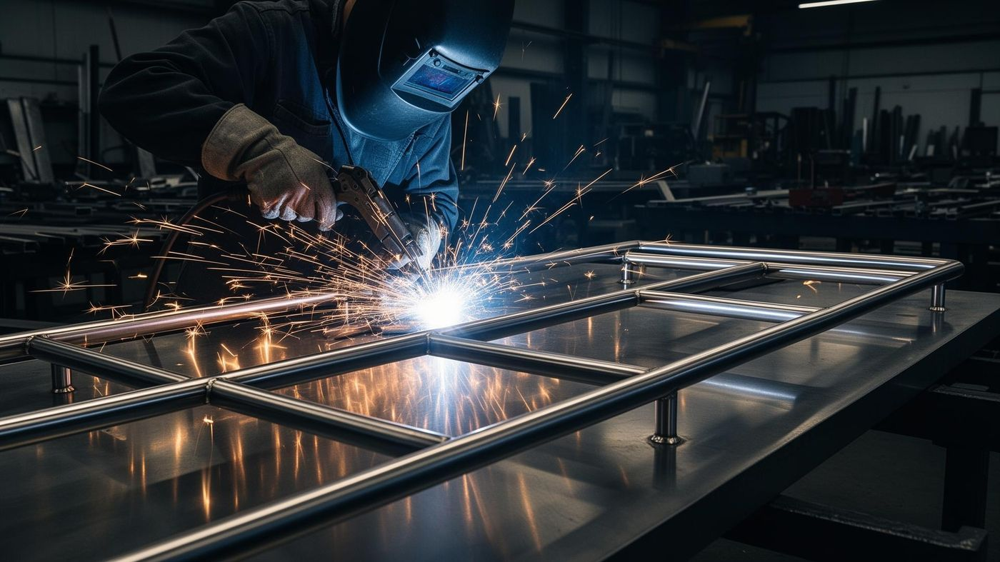
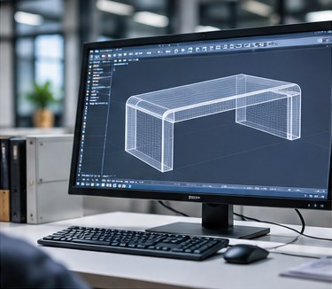

You can start with a sketch, a reference photo or a sample. The usual path is a feasibility review, a CAD/3D model, an engineering drawing, a prototype, your approval and then production. A sketch does not need exact dimensions, but it should show what the product is for, roughly how big it is and how it should look.
What a useful sketch includes
- Overall size, even if approximate: width, depth and height.
- Where it will be used: indoors or outdoors, home or commercial.
- How it is used: whether it carries weight, folds, stacks or is moved often.
- Materials and finish you have in mind, such as stainless steel with a stone or wood top.
- Reference photos of products with a similar look, and what you like or dislike about them.
The stages
| Stage | What happens | What we need from you |
|---|---|---|
| Feasibility review | We check structure, materials and how the product can be made. | Sketch, photos, rough size, intended use |
| CAD/3D model | The design is modeled so shape and proportions can be reviewed. | Feedback on the model |
| Engineering drawing | Dimensions and construction details are documented for manufacturing. | Confirmation of dimensions and details |
| Prototype | A physical sample checks structure, assembly and finish. | Sample review and feedback |
| Approval and production | The approved sample becomes the reference for production. | Final confirmation, quantity and packaging requirements |

Issues that often appear in engineering review
These are general considerations, not predictions for your project:
- Proportions that look right in a picture may need adjustment to be stable or comfortable to use.
- Slim frames can flex under load, so thickness and bracing may need discussion.
- The look you want may depend on how joints and welds are finished.
- Stone, glass or wood tops need support and edge details that affect the frame design.
- Polished or mirror-like finishes show marks easily and may need care in handling and packaging.
Have a sketch or reference photo?
Send it with rough dimensions and your intended use. We will tell you what is needed to move forward.
Customization options
Dimensions, structure, materials, surface finishes, logo marking and packaging can be discussed during review. Multi-material products can combine metal with wood, glass or sintered stone, subject to feasibility.
Limits and uncertainties
- Not every sketch can be made as drawn. We may propose changes to make it manufacturable.
- Prototype costs, engineering fees, MOQ and lead times are evaluated for each project.
- If your reference is another company's product, the right to reproduce it must be clarified first.
Send Your Product Drawing
Email your sketch, photo or drawing, or message us on WhatsApp.